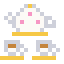
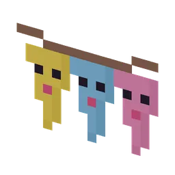
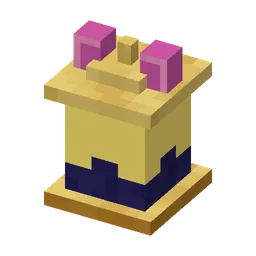

Mayor Vadsema is throwing the Great Cosy Party. Do the six party chores, keep the Kruimel-Mikas away from the buffet and celebrate.
Burgemeester Vadsema organiseert het Grote Knusfeest. Doe de zes feesttaakjes, houd de Kruimel-Mika's weg van het buffet en vier feest.
Burgemeester Vadsema and the six feesttaakjesBurgemeester Vadsema en de zes feesttaakjes
Talk to Burgemeester Vadsema on his steps: "Ahum!" He is planning the Grote Knusfeest and gives you a Knusfeestlijstje with six feesttaakjes. Each building makes one thing for the feast; bring them all to the Burgemeester:
Praat met Burgemeester Vadsema op zijn bordes: "Ahum!" Hij bereidt het Grote Knusfeest voor en geeft je een Knusfeestlijstje met zes feesttaakjes. Elk gebouw maakt één ding voor het feest; breng ze allemaal naar de Burgemeester:
| FeesttaakjeFeesttaakje | WhereWaar | HowHoe |
|---|---|---|
| Feesttaart | Knabbelbakkerij | Bake Bakker Korstje's special orderBak de speciale bestelling van Bakker Korstje |
| Theeservies  | Knabbelthee-huisje | Hold a gezellig theekransje: Mevrouw Theelepel lends you her setHoud een gezellig theekransje: Mevrouw Theelepel leent je haar servies |
| Feestkapsels | Knip & Vads | A kappersshow round in the feest themeEen kappersshow-ronde in feeststijl |
| Feestslingers  | Knuffelcreche | A calm care round: the babies knutsel slingersEen rustige verzorgronde: de babyguhtjes knutselen slingers |
| Feestbloemen | Your gardenJe tuintje | A feestboeket from five guhbloemetjesEen feestboeket van vijf guhbloemetjes |
| Sterrenlantaarns  | Guh-Sterrenwacht | Connect a constellation: Professor Sterretje gives you threeVerbind een sterrenbeeld: Professor Sterretje geeft je er drie |
Steps (FTB quests)Stappen (FTB-quests)
The quest texts are in Dutch, like everything in the game.De questteksten zijn Nederlands, net als alles in het spel.
- Het Knuffeldal
Ergens in de Guhmensie ligt een klein, zacht roze dal vol knuffelgras, pluizenbomen en guhpaddenstoelen: het Knuffeldal. Het superkompas (categorie Knus) wijst de weg naar het stadje in het midden.Ergens in de Guhmensie ligt een klein, zacht roze dal vol knuffelgras, pluizenbomen en guhpaddenstoelen: het Knuffeldal. Het superkompas (categorie Knus) wijst de weg naar het stadje in het midden. - Het stadje
In het midden van elk Knuffeldal ligt een knus stadje: een plein met een grote guhfontein, guhhuisjes met bewoners, Opa Guh bij het kampvuur en het feestbuffet. VAHOEG!In het midden van elk Knuffeldal ligt een knus stadje: een plein met een grote guhfontein, guhhuisjes met bewoners, Opa Guh bij het kampvuur en het feestbuffet. VAHOEG! - Burgemeester Vadsema
Praat met Burgemeester Vadsema op zijn bordes. Het Grote Knusfeest komt eraan... maar er is niks klaar, njeg! Hij geeft je een lijstje met zes feesttaakjes.Praat met Burgemeester Vadsema op zijn bordes. Het Grote Knusfeest komt eraan... maar er is niks klaar, njeg! Hij geeft je een lijstje met zes feesttaakjes. - Feesttaart
Feesttaakje: feesttaart. Bakker Korstje bakt hem in de Knabbelbakkerij, aan de noordkant van het plein. Breng het daarna naar de burgemeester.Feesttaakje: feesttaart. Bakker Korstje bakt hem in de Knabbelbakkerij, aan de noordkant van het plein. Breng het daarna naar de burgemeester. - Theeservies
Feesttaakje: theeservies. Mevrouw Theelepel leent het uit na een gezellig theekransje in het Knabbelthee-huisje (oostkant). Breng het daarna naar de burgemeester.Feesttaakje: theeservies. Mevrouw Theelepel leent het uit na een gezellig theekransje in het Knabbelthee-huisje (oostkant). Breng het daarna naar de burgemeester. - Feestkapsels
Feesttaakje: feestkapsels. Kapper Krulletje knipt ze tijdens een feestelijke kappersshow in Knip & Vads (zuidkant). Breng het daarna naar de burgemeester.Feesttaakje: feestkapsels. Kapper Krulletje knipt ze tijdens een feestelijke kappersshow in Knip & Vads (zuidkant). Breng het daarna naar de burgemeester. - Feestslingers
Feesttaakje: feestslingers. De babyguhtjes van Juf Knuffel knutselen ze in de Knuffelcreche (westkant). Breng het daarna naar de burgemeester.Feesttaakje: feestslingers. De babyguhtjes van Juf Knuffel knutselen ze in de Knuffelcreche (westkant). Breng het daarna naar de burgemeester. - Feestbloemen
Feesttaakje: feestbloemen. Kweek guhbloemetjes in je eigen tuintje en maak er een feestboeket van. Breng het daarna naar de burgemeester.Feesttaakje: feestbloemen. Kweek guhbloemetjes in je eigen tuintje en maak er een feestboeket van. Breng het daarna naar de burgemeester. - Sterrenlantaarns
Feesttaakje: sterrenlantaarns. Professor Sterretje geeft ze als je een sterrenbeeld verbindt in de Guh-Sterrenwacht. Breng het daarna naar de burgemeester.Feesttaakje: sterrenlantaarns. Professor Sterretje geeft ze als je een sterrenbeeld verbindt in de Guh-Sterrenwacht. Breng het daarna naar de burgemeester. - Kruimeldief!
Onderweg naar de burgemeester pikt een Kruimel-Mika de feesttaart, het theeservies of de slingers! Volg het kruimelspoor en lok hem weg met een lekkernij (kaasknabbels of gebak). Hij vecht nooit: hij giechelt alleen.Onderweg naar de burgemeester pikt een Kruimel-Mika de feesttaart, het theeservies of de slingers! Volg het kruimelspoor en lok hem weg met een lekkernij (kaasknabbels of gebak). Hij vecht nooit: hij giechelt alleen. - Het Grote Knusfeest
Breng alle zes feesttaakjes naar Burgemeester Vadsema. Dan begint het Grote Knusfeest aan het feestbuffet, en al je tamme guhs komen smullen! Je wordt Knuffelburgemeester en krijgt de Knus-oorkonde en de burgemeesterssjerp.Breng alle zes feesttaakjes naar Burgemeester Vadsema. Dan begint het Grote Knusfeest aan het feestbuffet, en al je tamme guhs komen smullen! Je wordt Knuffelburgemeester en krijgt de Knus-oorkonde en de burgemeesterssjerp. - Elk seizoen een feest
Na het Grote Knusfeest organiseert de burgemeester elk seizoen een seizoensfeest met een paar nieuwe feesttaakjes. Vier er een!Na het Grote Knusfeest organiseert de burgemeester elk seizoen een seizoensfeest met een paar nieuwe feesttaakjes. Vier er een!